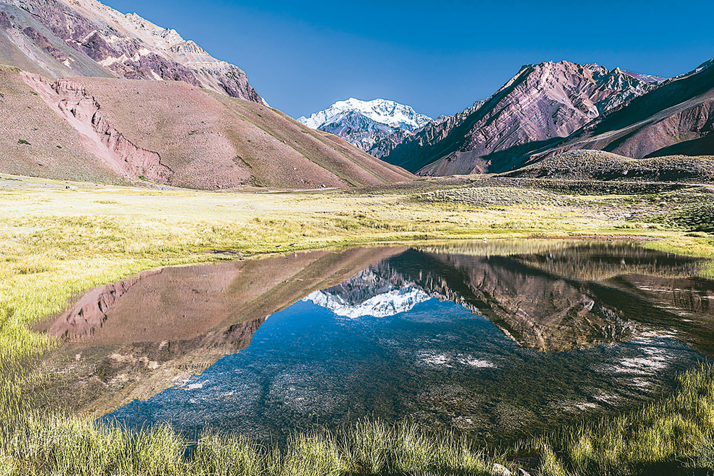
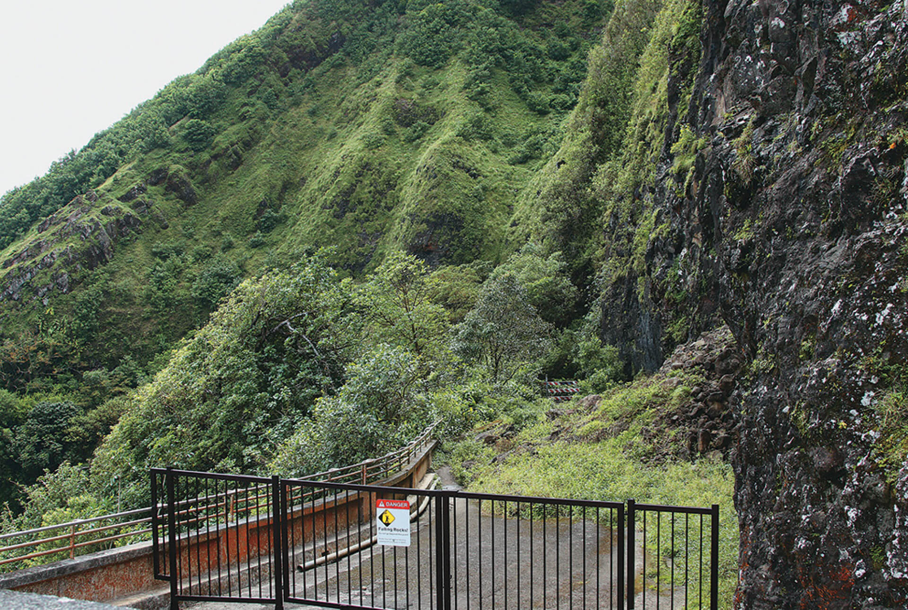
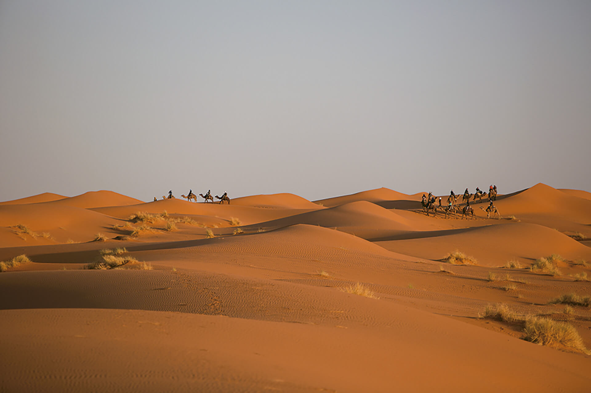
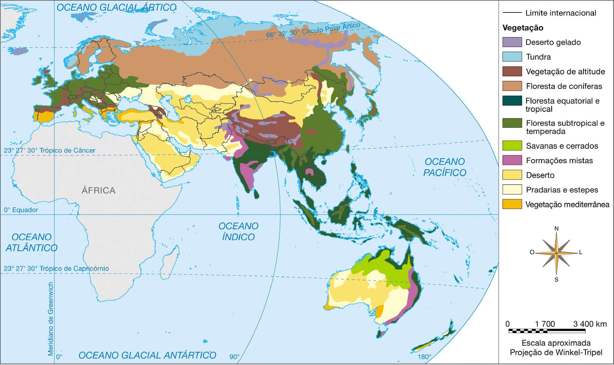

Monte Uluru, monólito arenítico que sobressai na árida planície australiana, 2010
Introdução
Pela sua importância geológica, ecológica e cultural, o Monte Uluru é reconhecido pela Unesco (Organização das Nações Unidas para a Educação, a Ciência e a Cultura) como Patrimônio da Humanidade. Atualmente conhecido pela palavra
nativa que os aborígenes australianos usam para se referir aos delicados entalhes que gravam em seus artefatos de madeira, o monólito da imagem nem sempre teve essa denominação oficial.
Por qual outro nome o monólito é conhecido?
Que outras paisagens naturais australianas ou de outros países da Oceania são tombadas pela Unesco como Patrimônio da Humanidade?
Pesquise na internet e registre a resposta no espaço a seguir.
Objetivos
Analisar as principais características ambientais da Ásia, Europa e Oceania.
Destacar as inter-relações entre os aspectos naturais desses continentes, bem como as relações entre o meio e as sociedades, com suas principais consequências.
Reconhecer, em diferentes paisagens da Ásia, Europa e Oceania, a diversidade ambiental e cultural desses continentes.
A rigor, os continentes são grandes massas de terras emersas circundadas por mares e oceanos. Trata-se das regiões do globo que, em geral, agrupam os países. Entretanto, a definição dos limites continentais não é consensual, tampouco
há um único critério para realizá-la. Dessa forma, o estabelecimento de tais limites nem sempre vai seguir o mesmo método.
Os continentes também podem apresentar separações em decorrência de critérios culturais, como é o caso da Ásia e da Europa. Do ponto de vista físico e geológico, elas formam um único bloco de terras emersas, denominado Eurásia.
Entretanto, por razões históricas e culturais, costumam ser consideradas continentes distintos, cujos limites se dão não por um oceano, mas pelos Montes Urais, na Rússia, os mares Negro e Cáspio e pela cadeia montanhosa do Cáucaso, que
se estende entre eles. Os limites continentais, nesse caso, coincidem com as fronteiras nacionais de alguns países asiáticos, como o Cazaquistão e o Azerbaijão, mas também passam por dentro do território da Turquia e da Rússia, países
em parte europeus e em parte asiáticos. Observe essas características na imagem a seguir.
O Mar Negro é um mar interior, pois está conectado ao Mar Mediterrâneo pelos estreitos de Bósforo e Dardanelos; já o Mar Cáspio é um mar fechado, sem ligação com o oceano.
No que se refere à dimensão, a Ásia é o maior dos continentes e ocupa uma área de quase 44 milhões de km², ou cerca de 30% das terras emersas no planeta. Separa-se da África pelo oceano e também pelo canal de Suez, na Península do
Sinai, onde fica a fronteira entre Egito (África e Ásia) e Israel (Ásia), e o Mar Vermelho.
Paisagem de Palau, pequeno país insular da Oceania composto por oito ilhas principais e centenas de ilhas menores, como as da imagem, em uma configuração típica para a região, 2015
Já a Oceania é um continente composto pela Austrália, considerada uma potência continental por ter a maior economia e ocupar mais de 93% da área total, e pelos vários países insulares que a cercam, sendo a Nova Zelândia o maior e mais
desenvolvido entre eles. Trata-se, assim, de um continente disperso e fragmentado em milhares de ilhas que se espalham pelos arquipélagos do Pacífico, além das extensões maiores representadas pela Austrália, Nova Zelândia e a parte
oriental da ilha da Nova Guiné, onde se situa o país Papua Nova Guiné. Na parte ocidental dessa mesma ilha, fica a Indonésia, e a fronteira entre esses países é o marco divisório da Oceania com o continente asiático, já que a Indonésia
é considerada parte da Ásia.
A Oceania pode ser regionalizada conforme a localização das ilhas e países que a compõem. Dessa forma, excetuando-se a Austrália e Nova Zelândia, que divergem dos demais países do continente em termos de tamanho territorial e econômico
e que constituem a Australásia, existem três regiões: a Melanésia, a Micronésia e a Polinésia. Observe, no mapa abaixo, como elas se distribuem no Oceano Pacífico.
Oceania

Talita Kathy Bora
Fonte: ATLAS National Geographic: oceania, polos e oceanos. São Paulo: Abril, 2008. v. 11. Adaptação.
Cartografar
Com o auxílio de um mapa político da Oceania (em um atlas ou na internet), identifique os países solicitados, conforme as características informadas.
Assinale no mapa abaixo a numeração indicada para cada país de acordo com os itens a seguir.
Por meio de pesquisa, complete as afirmações com o nome dos respectivos países.
a) Com os números 1, 2 e 3, identifique os países mais extensos da Oceania, respectivamente: , e .
b) Com o número 4, identifique um dos mais novos Estados independentes do globo – sua independência ocorreu em 1994, está localizado na Micronésia, ao norte da ilha da Nova Guiné e a sudeste das Filipinas: .
c) Com o número 5, identifique o país, situado na Melanésia, em que se deu uma das mais célebres batalhas travadas no Pacífico durante a Segunda Guerra Mundial – a Batalha de Guadalcanal, em 1942: .
d) Com os números 6 e 7, identifique dois Estados polinésios que não são independentes: – considerado território
estadunidense desde 1900, tem paisagens formadas pela atividade vulcânica nos últimos milhões de anos; e – é a maior e
mais populosa das ilhas da Polinésia Francesa, onde se situa a cidade de Papeete.
Relevo e hidrografia
A Eurásia formou-se, há cerca de 55 milhões de anos, da divisão de um supercontinente extinto denominado Laurásia. Tratava-se da porção norte de outro supercontinente maior, a Pangeia. Quase na mesma época, a Índia, até então uma
grande ilha, iniciava seu processo de colisão com a Eurásia, erguendo a cordilheira do Himalaia e causando o relevo acidentado da região meridional da Ásia.
A Oceania, por sua vez, formou-se da fragmentação de Gondwana, outro antigo supercontinente. Há cerca de 33 milhões de anos, a Austrália separava-se da Antártica, deslocando-se mais ao norte. As ilhas de origem vulcânica dispersas pelo
Pacífico são ainda mais jovens, com idade aproximada de 8 milhões de anos, e resultam da movimentação das várias Placas Tectônicas que formam o assoalho desse oceano.
Ilha de Maui, no arquipélago do Havaí, Estados Unidos, 2014
Por centenas de milhões de anos, forças atmosféricas e pressões tectônicas configuraram o relevo dos continentes em grande diversidade de formas, além das ilhas oceânicas de origem vulcânica. Veja algumas formas de relevo nos tópicos e
nas imagens a seguir.
planaltos antigos e erodidos pela ação do tempo no Irã, Mongólia e interior da Austrália; planaltos cobertos por rochas originadas de derrames de magma, como na Sibéria Central e no sul da Índia; planaltos soerguidos pela colisão
de placas da litosfera, como o Planalto do Tibete, no oeste da China;
cadeias de montanhas dispostas em sentido latitudinal, como os Pirineus, entre a França e Espanha (sudoeste da Europa); os Alpes, que se estendem da França até a Eslovênia, passando por diversos países no centro-sul do mesmo
continente; o Cáucaso, no Azerbaijão, Geórgia, Rússia e Armênia, divisa entre Ásia e Europa; e o Himalaia, no sul da Ásia. Há, também, cadeias de montanhas dispostas em sentido longitudinal, como os Apeninos, na Itália; os Urais, na
Rússia; os Alpes japoneses, no Japão; e a Grande Cordilheira Divisória, na Austrália;
extensas planícies que se estendem por quase toda a região setentrional da Europa e da Ásia;
depressões interiores drenadas por bacias hidrográficas endorreicas (que terminam no interior dos continentes) no entorno dos mares Cáspio, Aral e Morto e no centro-leste da Austrália, na Grande Bacia Artesiana.
Nativo com uma águia no Planalto da Mongólia, 2015
Em ordem cronológica, os terrenos mais antigos da Ásia e Europa, ou Eurásia, estão nos planaltos originados principalmente sobre os escudos cristalinos, formações geológicas pré-cambrianas e, em alguns casos, sobre bacias sedimentares.
Algumas bacias sedimentares de antigos ambientes marinhos, pressionadas por forças tectônicas, desenvolveram condições favoráveis para a formação de petróleo. É o caso da região compreendida entre os mares Negro e Cáspio, no Leste
Europeu e Golfo Pérsico, que fica entre a Arábia Saudita e o Irã, no Oriente Médio, onde se situam algumas das principais jazidas petrolíferas e de gás natural do mundo, conforme veremos no próximo capítulo.
Observe a imagem de satélite abaixo e compare com o mapa das bacias hidrográficas para, em seguida, responder às questões propostas na página seguinte.
Fonte: WORLD atlas reference: everything you need to know about our planet today. 9. ed. London: Dorling Kindersley Limited, 2013. p. XVI. Adaptação.
Cartografar
Identifique onde se dá o exutório, ou seja, o local em que desembocam as águas das principais bacias hidrográficas da Europa e da Ásia, e registre no espaço correspondente.
Bacia hidrográfica
Exutório no golfo/no mar/no oceano
Bacia do Reno
Bacia do Danúbio
Bacia do Volga
Bacia do Ob
Bacia do Ienissei
Bacia do Lena
Bacia do Amur
Bacia do Huang He (ou Rio Amarelo)
Bacia do Yangtsé (ou Rio Azul)
Bacia do Mekong
Bacia do Ganges-Brahmaputra
Bacia do Indo
Bacia do Tigre e Eufrates
Planaltos da Eurásia: ondulados e erodidos
Na Europa, as formações mais elevadas do relevo, como os planaltos e as cadeias de montanhas, localizam-se mais para o sul e contornam, a certa distância, o Mar Mediterrâneo. As áreas planálticas europeias, pouco extensas e onduladas,
situam-se principalmente na Espanha – onde formam as mesetas, superfícies ora mais aplainadas, ora mais escarpadas e de onde se erguem serras – e no sudeste do continente, desde a Eslováquia ao norte da Grécia, onde estão os Balcãs,
maciço montanhoso que engloba diversos países.
Na Ásia, os planaltos ocupam áreas mais vastas, com destaque para os planaltos do Oriente Médio, principalmente na Península Arábica e no Irã; o Decan, no centro-sul da Índia; e os situados na Ásia Central, desde a Mongólia e o
Cazaquistão até centro-oeste chinês. Nessa região, ergue-se o planalto Tibete, o mais elevado da Terra.
As tensões tectônicas resultantes do encontro do subcontinente indiano com a grande massa eurasiática causaram dobramentos no Planalto do Tibete e outras áreas da Ásia Central, modelando altas cadeias de montanhas ao norte e a oeste do
Himalaia.
As montanhas do Pamir, conhecidas por representar obstáculo aos antigos viajantes que, por volta dos séculos XV e XVI, atravessavam a região por meio da Rota da Seda, se erguem sobre a borda ocidental do planalto tibetano. A esse
respeito, veja a seção da página seguinte.
Montanhas do Pamir sobre o Planalto do Tibete, China, 2015
Em suas viagens pelo Oriente, como os europeus denominavam todo o continente asiático no final do século XIII, o mercador veneziano Marco Polo atravessou as montanhas do Pamir, as quais ele
acreditava serem as mais elevadas do mundo. Em meio à viagem, duas situações curiosas se destacam. Em uma delas, Marco Polo engana-se ao buscar a explicação para a dificuldade de o fogo se manter aceso nas elevadas altitudes do Pamir.
Na outra, seu relato não foi devidamente acreditado e ainda lhe rendeu fama de exagerado. Confira o texto a seguir sobre essas descobertas de Marco Polo na cordilheira do Pamir.
veneziano: refere-se a cidadãos da cidade italiana de Veneza, uma das maiores potências econômicas e militares da época.
[...] Marco Polo cruzou o Pamir em sua épica viagem à corte de Kublai Khan, na China. Penetrou nas montanhas pelo lado sudoeste, onde é hoje o Afeganistão. “Depois de [...] viajar três dias para o nordeste, sempre entre as
montanhas, chega-se a uma tal altitude que o lugar é considerado o mais alto do mundo. A região é tão elevada e fria que não se vê nenhum pássaro voando”, escreveu. Segue-se uma explicação equivocada da falta de oxigênio em grandes
altitudes: “Por causa desse frio intenso, o fogo não queima tão intensamente, não nos aquece como normalmente, nem cozinha a comida com eficiência.” Continuando, descreve o enorme carneiro, que mais tarde recebeu seu nome: “Há
inúmeros e variados tipos de animais selvagens; entre eles, um carneiro imenso, com chifres de três, quatro e até seis palmos de comprimento”, com os quais os pastores fazem “conchas e vasos para guardar suas provisões” e “cercas
para prender seu gado e protegê-lo dos lobos, os quais, dizem eles, infestam a região”. Na Europa, não se deu crédito à descrição do carneiro gigante, que contribuiu para dar a Marco Polo o apelido de Il Milione – “o
milhão” –, o
contador de histórias fantásticas, que chegavam a superar As mil e uma noites.
ST. GEORGE, George. Desertos e montanhas da União Soviética. Rio de Janeiro: Cidade Cultural,1983. p.147. (As Regiões selvagens do mundo / Time-Life livros).
Tradição milenar de adornar os muros das propriedades rurais com chifres de carneiro, Vale de Wackham, Tadjiquistão
A respeito dos temas abordados no texto, debata com seus colegas:
Se não é o excesso de frio que inibe a intensidade do fogo, qual é o fator responsável por essa situação vivenciada por Marco Polo?
Séculos depois da passagem de Marco Polo pelo Pamir, descobriu-se que há outra cordilheira com montanhas ainda mais elevadas. Que cordilheira é essa? Onde ela se situa? Quais são seus picos culminantes?
Topo do mundo nas montanhas da Eurásia
As maiores altitudes europeias se localizam nas cordilheiras do Cáucaso, no sudeste do continente, e dos Alpes, que se situam na parte centro-meridional.
No Cáucaso se destaca o Monte Elbrus, com 5 642 metros de altitude, localizado na fronteira entre a Rússia e a Geórgia, enquanto nos Alpes o ponto culminante é o Monte Branco, na fronteira entre a França e a Itália. Em outras cadeias
de montanhas europeias, altitudes superiores a 3 mil metros são raras, com as exceções da Sierra Nevada e dos Pirineus, respectivamente no sul e norte da Espanha, ou, ainda, na ilha da Sicília, na Itália. É nesta que se situa o mais
alto vulcão ativo da Europa, o Etna, com 3 340 metros de altitude.
Vulcão Etna, na ilha da Sicília, Itália, durante erupção em 2017
Os Apeninos, que se dispõem como uma espinha dorsal ao longo da Península Itálica, na Itália, apresentam picos com mais de 2 mil metros de altitude, assim como os Balcãs, do norte da Grécia aos Alpes Dináricos, no oeste da
Bósnia-Herzegovina. Nos Cárpatos, cadeia que se estende da Eslováquia à região da Transilvânia, na Romênia, e nos Alpes Escandinavos, nas altas latitudes norueguesas e suecas, também há picos que ultrapassam os 2 mil metros. Por fim,
nos Montes Urais, situados no centro-oeste da Rússia, limite entre Europa e Ásia, em cujo entorno se exploram importantes jazidas de carvão, ferro e cobre, as maiores altitudes alcançam cerca de 1,6 mil metros.
Monte Everest, considerada a montanha mais alta do globo, Nepal, 2012
No continente asiático, as cordilheiras, em geral, são mais elevadas. Altitudes superiores a 3 mil metros ocorrem em montanhas do sul e do norte da Turquia; na costa do Irã, onde se erguem os Montes Zagros; nos Montes Altai,
localizados na região oeste da Mongólia, nos vulcões da Península de Kamchatka, leste da Sibéria, na Rússia, em picos dos Alpes japoneses e, por fim, na Indonésia. Na Ásia Central, as altitudes alcançam 7 mil metros, como na cadeia Tian
Shan, na fronteira da China com Quirguistão; um pouco mais ao sul, na já referida cadeia do Pamir e no Hindo Kush, entre o Afeganistão e o Paquistão. Por fim, 14 picos ultrapassam a marca dos 8 mil metros de altitude, considerada entre
os montanhistas como zona da morte, em razão dos elevados riscos de acidentes provocados pelo ar rarefeito, bruscas mudanças do tempo e pelo esgotamento físico em que muitos desportistas se encontram em tais altitudes. Todas essas 14
montanhas situam-se na cordilheira do Himalaia, na qual sobressai o Monte Everest (Sagarmatha ou, ainda, Chomolungma), com 8 848 metros e, ao noroeste, a cadeia do Karakorum, em que sobressai o Monte K2, com 8 611 metros.
K2, a segunda montanha mais alta do globo, Paquistão, 2016
As planícies, em geral de formação geológica mais jovem do que as montanhas e os planaltos, se estendem principalmente na região setentrional dos continentes europeu e asiático, além de áreas costeiras e algumas porções interioranas de
vales de grandes rios. Com exceções como os Alpes escandinavos, na Noruega e Suécia, e os highlands, região das terras altas escocesas, o norte europeu é uma extensa planície. Por ter se formado, em grande parte, sobre bacias
sedimentares do final da Era Paleozoica, apresenta significativas jazidas carboníferas.
Na Europa, a Grande Planície Europeia ocupa áreas que vão da França à Rússia. Parte dessas superfícies aplainadas era ocupada há cerca de 300 milhões de anos por pântanos cercados de árvores e arbustos lenhosos. No decorrer do tempo,
esses ambientes foram cobertos por sucessivas camadas de sedimentos que, juntamente com forças tectônicas, exerceram fortes pressões sobre seus restos orgânicos, resultando na formação do carvão.
A exploração do carvão mineral desde o final do século XVIII, na Grã-Bretanha e, em seguida, em bacias sedimentares na Bélgica, França, Alemanha, Itália, Polônia, Ucrânia e Rússia, entre outras regiões, reconfigurou o espaço geográfico
regional ao integrar as minas de carvão às indústrias, por meio de ferrovias. Com a Revolução Industrial, as planícies europeias tornaram-se mais densamente povoadas e em muitas de suas cidades a população se multiplicou.
A extração de carvão possibilitou o desenvolvimento da industrialização e urbanização em uma das áreas mais densamente povoadas do globo.
As planícies asiáticas, por sua vez, abrigam, há milênios, sociedades baseadas nos espaços agrários e urbanos, como no caso das populações que floresceram ao longo dos cursos dos rios Tigre e Eufrates, que atravessam vários países do
Oriente Médio. Destacam-se também os vales dos rios Indo e Ganges, no norte da Índia, e a mesopotâmia chinesa, como é conhecida a planície compreendida entre os rios Amarelo (Huang He) e Azul (Yangtsé), áreas de alta densidade
populacional. O mesmo ocorre com o vale do Rio Meckong, na Península da Indochina, que abrange o Vietnã, Camboja, Laos e parte da Tailândia, assim como na Indonésia, onde as planícies dividem o território insular com as montanhas
vulcânicas.
Planície da Sibéria Ocidental, vale do Rio Ienissei, 2011
Para leste dos Montes Urais, que separa a Europa da Ásia no território russo, estendem-se as planícies da Sibéria Ocidental e Siberiana do Norte, ocupadas predominantemente pela taiga, a extensa floresta de coníferas russa.
Mais ao sul da mesma cadeia, a superfície se aplaina e a altitude diminui, ficando inferior ao nível médio dos mares: é a Depressão Caspiana, onde se dá a foz em delta do maior rio europeu, o Volga. Ali também situam-se importantes
campos petrolíferos e de gás natural.
Vista aérea do Rio Volga, em Astrakhan, Rússia, 2017
Entre as depressões absolutas, superfícies cercadas por áreas mais elevadas e que apresentam altitudes abaixo do nível do mar, destaca-se o Mar Morto, localizado em uma falha geológica. O Mar Morto, que ocupa área cada vez menor,
atualmente cerca de 650 km², situa-se a aproximadamente 430 metros abaixo do nível do Mar Mediterrâneo. Localizado entre o território palestino da Cisjordânia, em Israel, e a Jordânia, é abastecido apenas pelo Rio Jordão e suas águas
são as mais salgadas do globo, com salinidade sete vezes superior à média das águas oceânicas.
Tal como o Mar Cáspio e o Mar Morto, o Mar Aral também é isolado, ou seja, totalmente cercado por terras. No entanto, conforme será explicado no capítulo 6, o Mar Aral está desaparecendo.
Durante milênios, as águas do Amu Daria, que brotam nas montanhas da cadeia do Hindo Kush, desaguavam no Aral, contribuindo para seu abastecimento. Com o recuo das margens, o fluxo do rio não o alcança mais, terminando a cerca de 110
km das atuais margens meridionais do mar.
Imagem de satélite da falha geológica em que se situam o Mar Morto e o Rio Jordão
Cartografar
Região do Mar Aral
Marilu de Souza
Fonte: HARRIMAN, Lindsey. The future of the Aral Sea lies in transboundary co-operation. Disponível em: &ly;https://na.unep.net/geas/getUNEPPageWithArticleIDScript.php?article_id=108>. Acesso em: 26 out. 2018.
Adaptação.
Confira no mapa físico da Ásia o curso do Rio Amu Daria. Registre a seguir:
a) o local de sua nascente e como o rio se abastece;
b) a direção predominante que o rio segue;
c) o local de sua foz;
d) outro mar interior situado relativamente próximo ao Aral e igualmente cercado por áreas de reduzida pluviosidade.
Rios e lagos da Ásia e Europa
Grandes civilizações do passado se desenvolveram junto a importantes rios da Ásia e da Europa. Entre cerca de 10 mil e 5 mil anos atrás, aproximadamente, muitas das superfícies planas que periodicamente eram inundadas por eles,
principalmente nos médio e baixo vales, transformaram-se em espaços de cultivo e domesticação de animais. Posteriormente, nesses mesmos locais, se desenvolveram sítios urbanos. Mesmo nos dias de
hoje, importantes cidades europeias e asiáticas nasceram e cresceram nas margens de rios ou mesmo em ilhas fluviais. Entre elas, destacam-se Londres, capital do Reino Unido, às margens do Rio Tâmisa; Paris, capital da França, às margens
do Rio Sena; as alemãs Hamburgo, no Rio Elba, e Colônia, no Reno; Bagdá, capital do Iraque, às margens do Rio Tigre; a indiana Calcutá, no Rio Ganges; a chinesa Nanquim, no Rio Yangtsé, entre outras.
Os médio e baixo vales de um rio são segmentos do curso fluvial, que é dividido em três. O primeiro terço do rio, a partir da nascente, é o curso superior ou alto vale do rio; o segundo segmento é o curso médio ou
médio vale, e o trecho final, que culmina na foz, é o curso inferior ou baixo vale do rio.
Às margens do Rio Yangtsé, a cidade de Nanquim, no leste da China, 2017
As mais altas e extensas cadeias de montanhas são também os principais divisores de bacias. Nelas nascem rios que descem as encostas das cordilheiras. Nos planaltos e planícies, suas águas se avolumam com a contribuição dos afluentes.
Como na América do Norte, os lagos europeus e asiáticos se localizam geralmente mais ao norte e têm, em sua maioria, origem glacial. Com o recuo da glaciação após a última Idade do Gelo, finalizada há cerca de 20 mil anos, milhares de
lagos se formaram da Irlanda à Sibéria. São lagos originados pelo movimento do gelo maciço que havia sobre eles. Portanto, podem ser considerados testemunhas de uma época bem mais fria. A Suíça e mais ainda a Finlândia, entre outras
características, são conhecidas pela grande quantidade de lagos que se distribuem aos milhares por seus territórios. A Rússia também apresenta grande quantidade de lagos de origem glacial, entre os quais, pela extensão, se destacam o
Ladoga, com cerca de 18 mil km², e o Onega, com superfície de quase 10 mil km².
Há também lagos de origem tectônica, formados em falhas geológicas. O mais extenso entre eles é o Bajkal, na região siberiana da Rússia. Com mais de 30 mil km² e uma profundidade superior a 1 600 metros, esse lago se localiza sobre uma
extensa falha que pode estar ligada à formação de outras depressões, como o Mar Cáspio, o Mar Morto, além do Golfo de Aqaba, na extremidade norte do Mar Vermelho, e até mesmo o Rift Valley (ou Grande Vale da Fenda da África
Oriental). Mais de 300 rios desembocam no lago Bajkal, que, entre os de água doce, é o mais volumoso do continente asiático. Assim, como também ocorre com os mares Morto e Aral, o lago Bajkal constitui uma bacia endorreica, já que os
rios que nele desembocam não têm sua foz no oceano, e sim no interior do continente.
Lago Bajkal, na Rússia, 2017, em cena incomum: no inverno bolhas de ar se congelam próximo à superfície
Apresente um exemplo europeu ou asiático para cada uma das seguintes formas de relevo.
a) planície;
b) depressão absoluta;
c) planalto;
d) cordilheira.
Entre os diferentes tipos de origem de lagos estão os tectônicos e os glaciais. Cite e situe um exemplo de lago europeu ou asiático de origem:
a) glacial;
b) tectônica.
Os rios Reno, Ienissei, Yangtsé e Indo têm drenagem exorreica. Os rios Volga, Amu Daria e Jordão têm drenagem endorreica. Qual é a diferença entre as duas formas de drenagem?
Relevo e hidrografia da Oceania
A Oceania é um continente fisicamente dividido de maneira muito desigual: 98,8% de sua superfície corresponde ao território de três países: Austrália, que compreende 90% de todas as terras da Oceania, Papua Nova Guiné e Nova Zelândia.
Pouco mais de 1% da área da Oceania é repartida por milhares de ilhas que constituem onze países localizados na vastidão do Oceano Pacífico e alguns territórios dos Estados Unidos e França. Nesse continente fragmentado, o relevo e a
hidrografia se configuram de várias formas diferentes.
As ilhas da Micronésia são, em geral, topos de montanhas submarinas que se elevam a poucos metros acima do nível do oceano. Localizadas próximo às bordas de Placas Tectônicas, muitas delas apresentam origem vulcânica. Vistas do alto,
têm a forma de anel. A areia e a vegetação arbórea recobrem o anel, enquanto a circunferência interna se constitui de uma laguna relativamente rasa e de águas claras. Na parte externa das ilhas aneladas, a mudança nos tons de azul do
mar, do claro para o escuro, denunciam a brusca variação da profundidade. As ilhas com essas características são denominadas de atóis.
Vista aérea do atol de Bora Bora, na Polinésia Francesa (França), 2014
Atóis, como os das ilhas Carolina e Marshall, na Micronésia, também são encontrados em alguns arquipélagos da Melanésia e da Polinésia. Porém, nestas últimas são comuns formações de relevo com montanhas elevadas e vulcânicas, como em
Fiji ou no Taiti, uma das ilhas da Polinésia Francesa e uma das dependências da França na Oceania.
As diferentes formas de relevo e, por consequência disso, as diferentes altitudes, influem no volume de chuvas que se precipita sobre as ilhas. As ilhas baixas geralmente apresentam menor pluviosidade do que as com formações
montanhosas.
Resort turístico em Papeete, na Polinésia Francesa, 2016
Nas encostas íngremes da ilha Oahu, uma das que compõem o arquipélago havaiano, as curiosas e irregulares formas de relevo, denominadas de pali, proporcionam outras surpresas. Confira o texto abaixo.
Saiba +
A forma de uma montanha e o aspecto que ela apresenta ao vento que se aproxima também afetam o volume das chuvas e o ponto onde caem. Há lugares no Havaí em que os ventos de nordeste chocam-se em ângulo reto com os pali –
penhascos
–, que se inclinam a sudeste. Um bloqueio perpendicular desse tipo ocorre nas montanhas Koolau, na ilha de Oahu. Em alguns trechos, os pali elevam-se a 450 metros; quando o vento os encontra, sobe com força incrível. Em um
determinado ponto muito visitado por turistas, na rodovia de Pali, os ventos ascendentes são tão fortes que [...] pequenos objetos como moedas, por exemplo, podem voltar com as correntes ascendentes. Perto do mirante há uma
queda-d’água invertida: quando a água começa a escorrer pela borda do penhasco, muitas vezes ela sobe em vez de cair. As gotas de chuva também são sopradas para cima. Em vez de caírem no lado de onde sopra o vento, em geral caem no
outro lado da montanha.

Fotoarena/Alamy/Stan Rohrer
Imagem da velha e abandonada rodovia de Pali, em Oahu, diante de um dos célebres penhascos da ilha, 2018
WALLACE, Robert. Havaí. Rio de Janeiro: Cidade Cultural,1983. p. 137. (As regiões selvagens do mundo / Time-Life Livros).
Analise o mapa das bacias hidrográficas da Oceania abaixo e, em seguida, resolva as questões.
Bacias hidrográficas da Oceania
Marilu de Souza
Fonte: WORLD atlas reference: everything you need to know about our planet today. 9. ed. London: Dorling Kindersley Limited, 2013, p. XVI. Adaptação.
Cartografar
Com o auxílio de um mapa físico e de um mapa político da Austrália, faça uma pesquisa para resolver as atividades a seguir.
Qual é o divisor de bacias ou divisor de água da região oriental da Austrália?
Desse divisor de bacias, descem os rios mais extensos da Austrália. Quais são esses rios?
A Bacia Interior, situada no centro da Austrália, caracteriza-se por dois aspectos marcantes:
a maior parte de seus rios têm curso intermitente, ou seja, temporário;
sua drenagem é endorreica.
Por que os rios dessa bacia são intermitentes? Para onde fluem suas águas?
As principais cidades australianas se situam nas planícies costeiras. De acordo com sua localização, cite algumas dessas importantes cidades.
a) Duas cidades na costa leste (do Oceano Pacífico);
b) Uma cidade na costa norte (do Mar de Timor, no Oceano Índico);
c) Uma cidade na costa oeste (do Oceano Índico);
d) Duas cidades na costa sul (no encontro das águas do Índico e do Pacífico).
Três principais cadeias de montanhas situam-se nos territórios mais extensos da Oceania. Próximo à costa leste da Austrália, localiza-se a Grande Cordilheira Divisória, com cerca de 3 mil quilômetros de extensão e cuja maior elevação é
o Monte Kosciuszko, com pouco mais de 2 200 metros de altitude. As formações rochosas, em sua maioria de origem sedimentar, datam de aproximadamente 300 milhões de anos, quando o planeta estava no período Carbonífero. Na Nova Zelândia e
na Papua Nova Guiné, por se situarem nas bordas de Placas Tectônicas, as formações montanhosas são mais jovens e mais altas: 4 509 metros de altitude no caso do Monte Wilhelm, em Papua Nova Guiné, e 3 754 metros de altitude no caso do
Monte Cook, na Nova Zelândia. Com tal altitude e situado em latitude média, de 43° sul, as neves e as geleiras são eternas no Monte Cook e em suas imediações.
Com bases geológicas muito antigas, a Austrália apresenta em seu território planaltos muito desgastados pelos agentes erosivos e com altitudes modestas. Entre as formações rochosas presentes na natureza semiárida do interior
australiano, conhecido como Outback, destaca-se o monólito Uluru, constituído de arenito vermelho, conforme visto na abertura do capítulo. Anteriormente denominado oficialmente Ayers Rock, pelo qual ainda é conhecido, teve seu nome
alterado para a forma nativa e foi convertido em patrimônio geológico e ecológico pela Unesco. Além disso, trata-se de um santuário cultural para os povos aborígenes australianos, que o cultuam há milhares de anos.
As principais planícies da Oceania situam-se no sul da ilha de Nova Guiné, no norte da Nova Zelândia, além do centro-leste e sul da Austrália, por onde percorrem os rios Murray e Darling, os mais extensos do continente. No centro
australiano, o lago Eyre se situa em uma depressão absoluta, cuja altitude é de 16 metros abaixo do nível do mar. As águas temporárias do Cooper e de outros rios efêmeros que cruzam parte dos desertos australianos correm para ele.
Entre as formas costeiras da Oceania, além das já citadas formações vulcânicas, como os palis havaianos, há ainda a Grande Barreira de Corais, ao longo do litoral nordeste da Austrália, e os fiordes, no sul da Nova Zelândia.
Vista aérea da Grande Barreira de Corais da Austrália, 2015
Conforme estudaremos melhor no capítulo 6, a Grande Barreira de Corais da Austrália, a maior do mundo, com cerca de 2 mil quilômetros de extensão, se situa no topo de um paredão quase contínuo de calcário de coral. As formações
coralíneas, que também são encontradas junto a várias ilhas do Pacífico, além de outros mares e costas como o Caribe e o Mar Vermelho, são próprias de águas tropicais.
Os fiordes, por sua vez, são formações costeiras de ambientes que, em um passado geológico recente, durante a última Idade do Gelo, eram vales preenchidos por geleiras. Com a elevação das temperaturas, o consequente degelo e aumento do
nível do mar, as águas oceânicas invadiram os antigos vales glaciais. Estas costas altas e aparadas, entremeadas por extensos braços de mar, recebem a denominação norueguesa de fiordes.
Paisagem do interior de fiorde na Nova Zelândia, 2014
Organize as ideias
A maioria dos grandes rios do mundo nasce em cordilheiras ou em elevados planaltos para, em seu curso médio ou inferior, percorrer planícies. Nos períodos das chuvas mais constantes e volumosas, quando as águas dos rios extrapolam sua
calha ou canal, as inundações depositam, nas partes mais baixas, sucessivas camadas de sedimentos, retirados das partes mais altas do relevo. Assim, os rios contribuem para a formação da planície com os resíduos das rochas retiradas nas
altas encostas e delas transportadas.
Consulte um atlas (ou os mapas e imagens de satélite apresentados ao longo do capítulo) que exiba o relevo e a hidrografia da Europa, Ásia e Oceania para completar o quadro abaixo, relacionando os rios com as cadeias de montanhas em
que eles nascem.
Do extremo meridional da Nova Zelândia, na Oceania, aos pontos extremos setentrionais da Península do Tamir, na parte asiática da Rússia, ou do Cabo do Norte, na Noruega, existem muitos domínios morfoclimáticos que caracterizam essas
áreas continentais e insulares. Em seu conjunto, exibem climas e formações vegetais que abrangem as três zonas térmicas da Terra: tropical, temperada e polar. Vejamos mais detalhadamente esses diferentes domínios naturais. Para começar,
compare a seguir os mapas de clima e vegetação da Europa, Ásia e Oceania e, em seguida, faça as atividades.
Eurásia e Oceania: tipos climáticos

Talita Kathy Bora
Fonte: IBGE. Atlas geográfico escolar. 7. ed. Rio de Janeiro, 2016. p. 58. Adaptação.
Eurásia e Oceania: vegetação

Talita Kathy Bora
Fonte: IBGE. Atlas geográfico escolar. 7. ed. Rio de Janeiro, 2016. Adaptação.
Cartografar
Agora, complete o quadro abaixo com o nome dos tipos climáticos e de vegetação situados nas seguintes regiões da Oceania:
Nome da região da Oceania
Tipo climático
Tipo de vegetação
Sudoeste da Austrália
Papua Nova Guiné
Norte e nordeste da Austrália
Nova Zelândia, Tasmânia e leste da Austrália
Centro e oeste da Austrália
Domínios equatoriais, tropicais e desérticos
Situado no sul da Ásia, o arquipélago da Indonésia é atravessado pela Linha do Equador e apresenta diversas ilhas, tais como Bornéu, Célebes e Nova Guiné, que contam com grandes áreas contínuas de floresta equatorial conservada.
Temperaturas altas e estáveis, além da elevada pluviosidade no decorrer do ano, condicionam a diversidade de formas de vida vegetal e animal dessa floresta. Extração de madeira nobre, exploração mineral e expansão agrícola, como em
outras áreas equatoriais do globo, colocam sob pressão o futuro desses domínios florestais.
Florestas equatoriais e tropicais, relacionadas a climas úmidos e sem estação de seca, são latifoliadas, ou seja, têm folhas grandes ou largas; perenifólias, de modo que sempre há folhas em seus ramos, em qualquer estação do ano; e
ombrófilas, ou seja, são densas, úmidas e com muitos estratos ou níveis de altura de suas árvores. Elas se distribuem por algumas ilhas do Pacífico; em parte da Península do Cabo York, no nordeste da Austrália; na costa Malabar, no
sudoeste da Índia; nas penínsulas da Indochina e de Málaca, no sudeste asiático; no litoral sul da China, nas ilhas de Taiwan e Filipinas.
Queda-d’água em Jângal ou na floresta tropical em Kerala, no sudoeste da Índia, 2014
No norte da Austrália e sul e sudeste da Ásia, situam-se as savanas e florestas tropicais secas. Essa região tem o comportamento climático regido pelo movimento das monções asiáticas – massas de ar que atuam de acordo com a estação do
ano. Durante o verão no Hemisfério Norte, as chuvas de monções e os tufões deixam centenas de milhares de pessoas desabrigadas. Durante as monções de inverno, parte dessas mesmas regiões passa por meses de seca. Observe no mapa a
seguir.
Dinâmica das monções asiáticas
Marilu de Souza
Fonte: MENDONÇA, F. DANNI-OLIVEIRA, I. M. Climatologia: noções básicas e climas do Brasil. São Paulo: Oficina de Textos, 2007, p.97. Adaptação.
Nas latitudes dos trópicos, 23° 27’ ao Norte e ao Sul, e próximo a elas, estendem-se os desertos e sua vegetação escassa, de tipo xerófila, constituída de espécies que se adaptam a longos períodos sem chuva. Sob o Trópico de
Capricórnio, no hemisfério meridional, há os desertos australianos dispostos no centro e oeste do território. No Hemisfério Norte, sob o Trópico de Câncer, está o Deserto de Rub’ al-Khali, ou Deserto da Arábia e, próximo a esse trópico,
estão os desertos de Neguev, da Síria, o. Grande Deserto Salgado de Kavir, no Irã, e o Deserto de Thar, na região fronteiriça da Índia e Paquistão, entre outros. Há desertos frios, em latitudes maiores, como o Deserto de Takla Makan, no
noroeste da China, e o de Gobi, na Mongólia. Embora com temperaturas médias próximas a apenas 3 °C, em Gobi já se registraram temperaturas tanto perto dos 40 °C quanto dos -40 °C. Desertos e estepes também se localizam na Ásia Central,
entre as latitudes 40° e 50° Norte, no Uzbequistão e Cazaquistão.
Ainda nas latitudes médias, influenciadas pelos climas temperado e subtropical úmido, no leste da China e na maior parte do arquipélago japonês, estão os bosques temperados úmidos. O clima temperado, em suas variações oceânica (mais
úmida e com menor amplitude térmica) e continental (com grandes amplitudes entre o verão e o inverno), possibilitou a formação de florestas temperadas abrangendo a maior parte da Europa Ocidental. No entanto, o intenso uso do solo, no
decorrer de muitos séculos, deixou muito pouco dessa vegetação nativa.
Templo em meio à floresta temperada em Nara, Japão, 2015
Na Nova Zelândia, no sudeste da Austrália e na ilha australiana da Tasmânia, são encontrados domínios temperados de florestas com variedade no porte da vegetação. Esta pode apresentar desde árvores maiores e mais concentradas em
altitudes inferiores até matas mais espaçadas e menores nas médias e altas encostas dos morros e montanhas. Essas regiões da Oceania, famosas pelos eucaliptos e acácias, estão entre as de maior biodiversidade do planeta, o que está
associado à variedade climática e de formações vegetais.
Esses cenários deslumbrantes têm atraído uma nova categoria de turismo cultural: o cinematográfico, conforme revela o texto a seguir.
Conexões
No caminho de Auckland a Rotorua, as pastagens e as colinas verdejantes, repletas de graciosas ovelhas – ou de muito gado, já que a pecuária é bastante presente –, escondem a cidade de Matamata, na região de Waikato. Seria apenas mais
um lugar fascinante da Nova Zelândia, mas para quem é fã dos filmes O hobbit e O senhor dos anéis, essa é uma parada obrigatória, já que o lugar é um dos escolhidos pelo diretor neozelândes Peter Jackson para a
gravação de várias cenas, principalmente das que se passam no condado, a aldeia dos hobbits – seres de fantasia dos livros do escritor britânico J. R. R. Tolkien.
O set de filmagens, construído dentro de uma fazenda particular e batizado de Hobbiton, é um dos poucos que restaram intactos. O diretor Peter Jackson descobriu a fazenda, em 1998, durante uma busca aérea para escolher uma
locação adequada para as filmagens de O senhor dos anéis.
A paisagem lembrava os cenários descritos por J. R. R. Tolkien em seus livros. Mais de um ano depois da escolha do local, após meses de construção do set, é que começaram as filmagens. O local passou por uma reconstrução em 2011 para a
nova trilogia, mas desde 2002 já recebia a visita de milhares de fãs dos filmes.
SARAIVA, Jacqueline. Cenários de O Hobbit e o Senhor dos Anéis atraem visitantes à Nova Zelândia. Disponível em:
<http://www.correiobraziliense.com.br/app/noticia/turismo/2014/01/01/interna_turismo,405932/cenarios-de-o-hobbit-e-o-senhor-dos-aneis-atraem-visitantes-a-nova-zelandia.shtml>. Acesso em: 6 nov. 2018.
No entorno do Mar Mediterrâneo, sul do continente europeu até o litoral norte da África, os meses de verão são bastante quentes e secos, e o inverno é frio e chuvoso. Tais características correspondem ao clima mediterrâneo, próprio de
formações vegetais que mesclam bosques arbóreos e arbustivos, como maquis. A denominação mediterrânea para o clima e para a vegetação com características semelhantes às mencionadas é utilizada para outras regiões do globo, como a
Califórnia (Estados Unidos), a região central do Chile, o sudoeste da África do Sul, além do sudoeste da Austrália. O comportamento do clima mediterrâneo é favorável ao cultivo de vinhedos e oliveiras, o que gera preocupação quanto às
tendências de mudanças climáticas constatadas nas duas últimas décadas em algumas regiões, como nas proximidades de Perth, no oeste da Austrália.
No norte da Europa, na Península Escandinava e na Rússia, estende-se a floresta fria, ou boreal, ou ainda, denominada de taiga. Constituída de coníferas, essas florestas se caracterizam como
regiões de baixa densidade demográfica, principalmente por conta dos longos períodos anuais de baixas temperaturas e pouca luminosidade, próprios do clima frio das altas latitudes boreais, e parte delas é explorada pelas indústrias de
papel e celulose.
A floresta de coníferas é uma formação vegetal composta por árvores e arbustos com formatos próximos a cones e mais predominantes em climas temperados e frios. Cedros, ciprestes, abetos, sequoias e pinheiros são
alguns exemplos de coníferas.
Taiga, a floresta boreal da região da Sibéria, na Rússia
Domínios polares
Em uma faixa estreita ao longo do litoral do Ártico, no extremo norte da Eurásia, se desenvolve uma vegetação rasteira, composta principalmente de liquens e musgo, que constituem o domínio da tundra. Essa formação vegetal, adaptada às
rigorosas condições ambientais polares, se desenvolve por meio de um solo que passa a maior parte do ano congelado, denominado permafrost. No verão, sob a luz solar durante 24 horas em vários dias seguidos, o permafrost descongela e a
tundra se torna um ambiente pantanoso e muitas vezes colorido com as flores que se abrem no verão.
Nas altitudes mais elevadas de montanhas em áreas mais quentes, a vegetação vai se tornando escassa e de porte cada vez menor, até desaparecerem os arbustos e as gramíneas. Nessas elevações, apenas musgos e liquens estão presentes,
muitas vezes diretamente sobre as rochas: é a tundra alpina. Nas altitudes ainda maiores, há ausência total de vegetação, existem apenas geleiras e neve eterna. Isso ocorre nas altas encostas e nos cumes dos Alpes, Cáucaso e Himalaia,
entre outras cadeias de montanhas da Eurásia e Oceania.
Típica paisagem de tundra no verão da região da Lapônia, na Finlândia, 2013
Clima e vegetação, bem como outros elementos naturais, entre os quais o relevo e a hidrografia, estão conectados e são interdependentes. Complete o quadro a seguir com o nome do tipo climático ou da formação vegetal e cite, ainda,
algum local que exemplifique na Eurásia ou Oceania cada clima e vegetação.